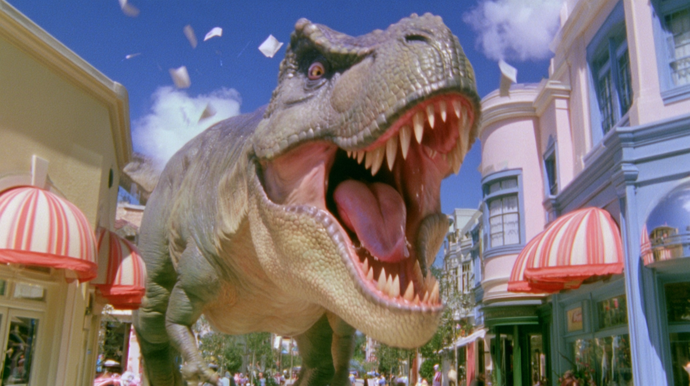
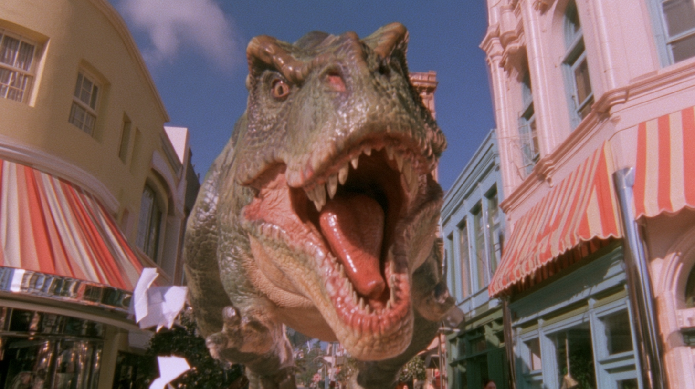
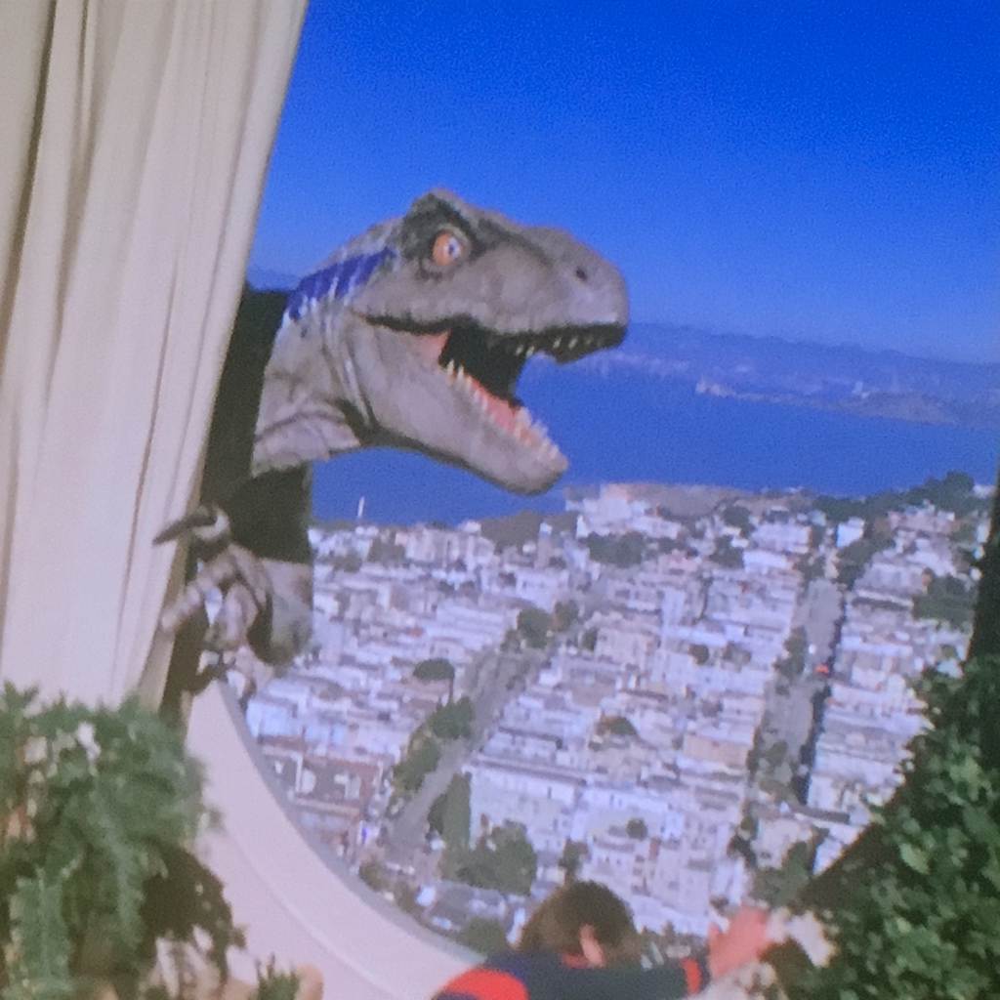
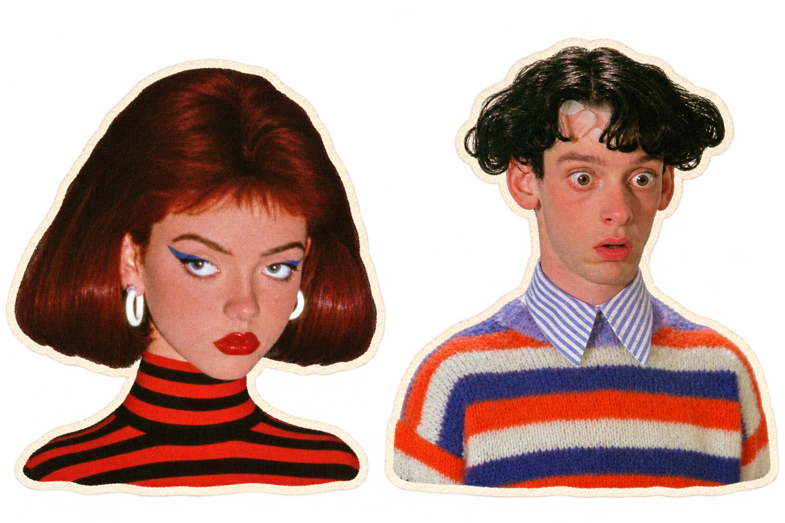
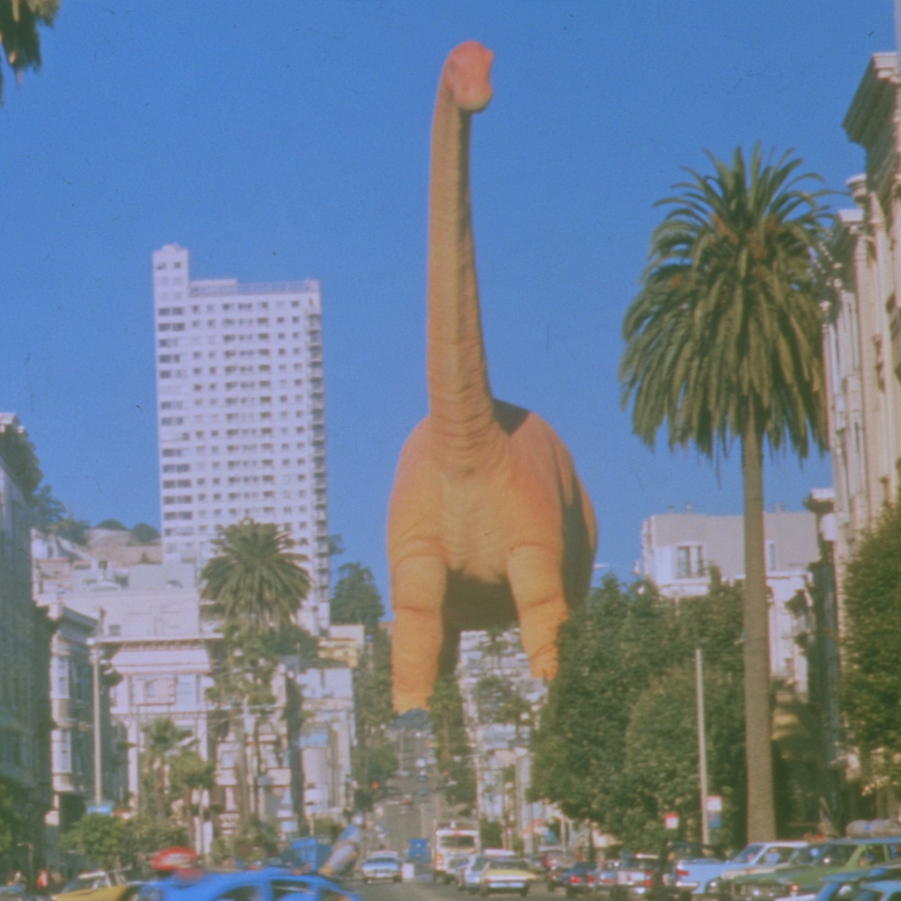
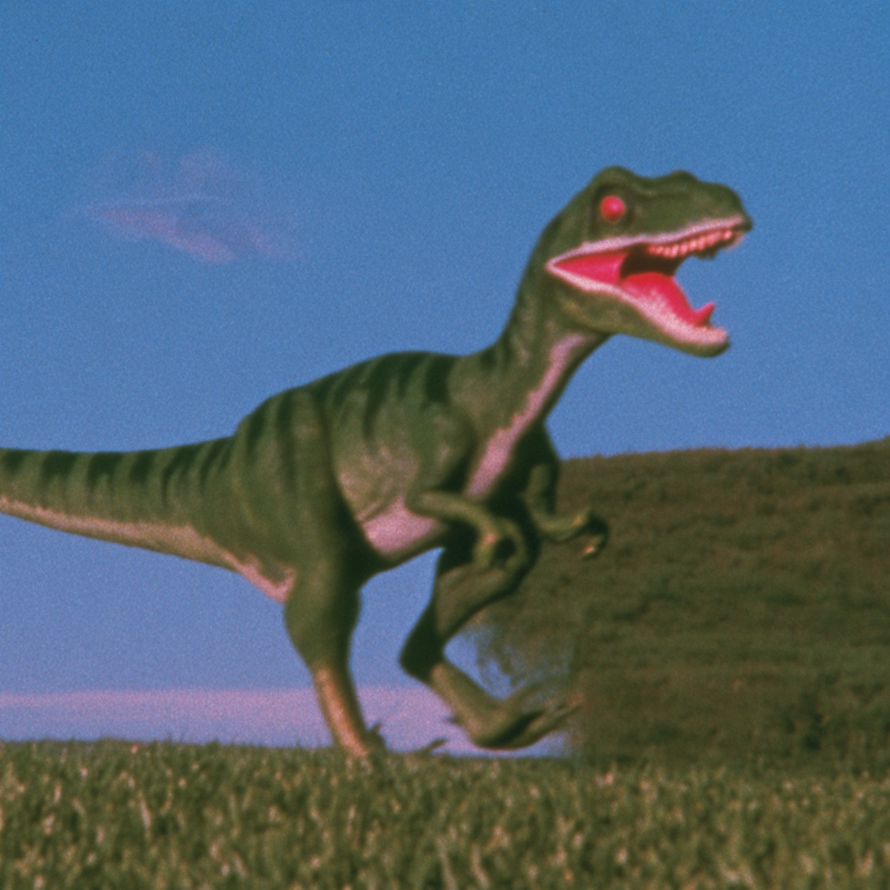
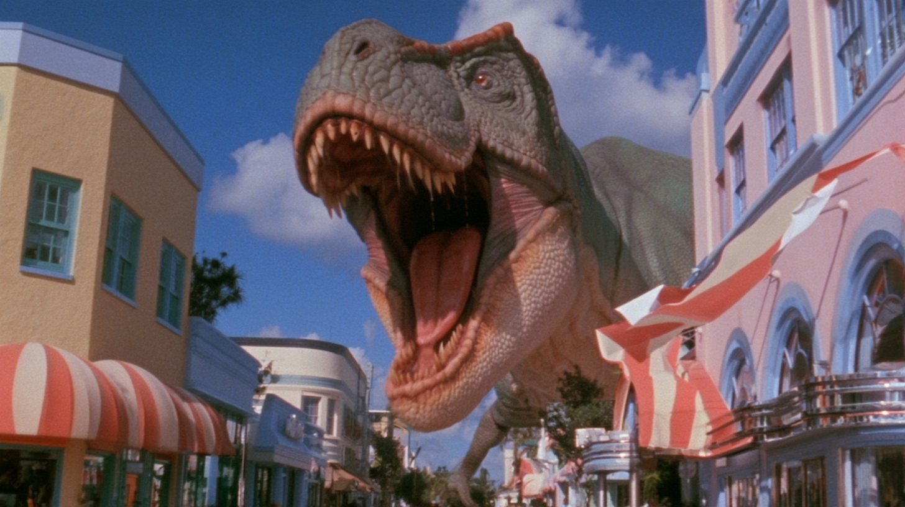

A NEW FREQUENCY OF PLAY
A little wild.
Very well
connected.
An extraordinary world. A wonderfully ordinary day.
Welcome to the neighbourhood, prehistoric friend.

were here.
PLEASE DO NOT FEED THE TELEVISION.
A perfectly normal Tuesday.
The neighbours are a little larger than life.

DRAG THE REEL. MEET THE LOCALS. TRY NOT TO STARE.
Big personalities.
Small talk.
Very small arms.
Some worlds ask you to be a hero.
Ours just asks you to come over.
Wander down the wrong street. Make an unlikely friend.
Stay for one more coffee. There’s no ordinary way to play.

35mm
The Club Gazette
Local residents
remain remarkably unfazed.
Another dinosaur on the high street? Must be Tuesday. The coffee is still hot. The dress code is still excellent.
In other news: the neighbourhood welcomes all species. A little personality is the only membership requirement.



IS A LITTLE
peculiar.

YOU ARE NOW ON CLUB TIME.